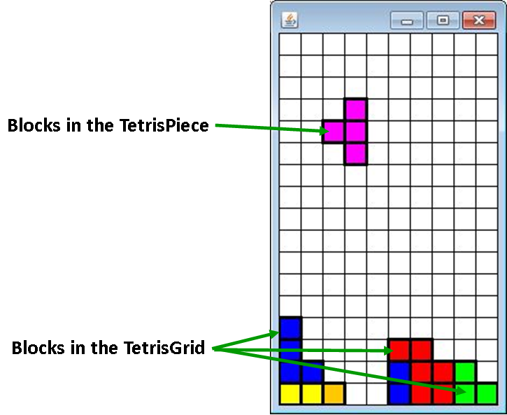

So far we've created the Block class and the Location class. The Block represents an individual element of the game, but they need to be organized into two areas:
1) The TetrisPiece: Four Blocks that are movable and rotatable
2) The TetrisGrid: All of the stationary Blocks left over in the grid.

Create a class named TetrisGrid. The TetrisGrid class will represent the grid as a whole. At its core will be a 2D Block array with each Location corresponding to where it appears on the screen.
The Constructor for TetrisGrid should take in two ints. The number of row and columns that the TetrisGrid should have. It should then use those values to construct a Block[][] of the matching size into the instance field.
Add methods numRows and numCols to return the dimensions of the grid.
Override the toString method to return a String that contains "TetrisGrid:" and is followed by the toString of every Block object in the grid. When looping through the grid many of the locations will be empty, meaning null. In order to protect us from crashing, check to see if the Block at that location is non-null before adding it to the String.
The TetrisGrid will have a 2D array as an instance field, but since it's a private instance field it cannot be directly accessed externally. In order to allow this object to be controlled, some methods need to be added to allow the TetrisGrid object to be modified.
public Block get(Location loc): returns the value at the given Location. You will have to extract the row and column out of the parameter so you can access that part of the array.
public void addBlock(Location loc, Block b): This method puts the Block in the array at the given Location
public void addRandomBlock(Location loc): This method will construct a Block of a random color and add it to the grid at the parameter location.
public boolean isValid(Location loc): This method is to help make sure that we don't crash the program by going out of bounds. Extract the row and columns from the parameter and return false if the row or column is either too large or to small. Returning a true value should only happen if accessing both the row and the column will not cause an indexOutOfBounds exception.
public void clearLoc(Location loc): This method will set the location in the grid to be null. This essentially removes it from existence.
public ArrayList<Block> getBlocks(): This method creates and returns an ArrayList of all the blocks that are in the 2D array. You will have to loop through every location in the array and add any non-null Blocks to the ArrayList.
A big part of this project is how we are going to store the Location of the Block. Currently the Block has a Location instance field, but Block’s Location is already being indirectly stored when we put it into the array. A Block stored at grid[5][3] kind of has a Location of 5,3 even if the Block’s Location variable says something else. In order for this project to work the way that we want it to, we are going to have to pay careful attention when a Block is added to the Grid.
Go back to the addBlock method. Make sure that two things are happening. First, the Block is being put into the array, and second you should call the Block’s setLocation method. This should ensure that both objects are aware of the Location.
Add the following tester method, which tests many of the methods that you've just created.
public static void tetrisGridTester()
{
System.out.println("Testing Constructor and adding methods:");
//Testing Constructor, addBlock, addRandomBlock,and toString
TetrisGrid tet = new TetrisGrid(9,13);
tet.addBlock(new Location(7,3),new Block(Color.RED));
tet.addBlock(new Location(2,1),new Block(Color.GREEN));
tet.addBlock(new Location(4,2),new Block(Color.BLUE));
tet.addRandomBlock(new Location(8,9));
System.out.println(tet);
//Testing clearLoc
System.out.println("\nclearLoc Test:");
Location loc = new Location(2,1);
System.out.println("Before clearLoc:");
System.out.println(tet.get(loc));
tet.clearLoc(loc);
System.out.println("After clearLoc:");
System.out.println(tet.get(loc));
//Testing numRows/numCols
System.out.println("\nnumRows(): "+tet.numRows());
System.out.println("numCols(): "+tet.numCols());
//Testing isValid
System.out.println("\nValid Location Test:");
Location[] goodLocs = new Location[]{new Location(5,7),new Location(0,3), new Location(7,0),new Location(8,4),new Location(2,12)};
for(Location tmpLoc : goodLocs)
{
System.out.println(tmpLoc+" isValid:"+tet.isValid(tmpLoc));
}
System.out.println("\ninValid Location Test:");
Location[] badLocs = new Location[]{new Location(-1,5),new Location(2,-1), new Location(9,2),new Location(4,13),new Location(2,113)};
for(Location tmpLoc : badLocs)
{
System.out.println(tmpLoc+" isValid:"+tet.isValid(tmpLoc));
}
System.out.println("Testing getBlocks()");
System.out.println(tet.getBlocks());
}
Check your output against the following. The toString may be formatted a little different, but the core data should match (except for the randomly colored block that was added to location (8,9).
Testing Constructor and adding:
TetrisGrid:
Block at Loc(2, 1) with Color[R:0 G:255 B:0]
Block at Loc(4, 2) with Color[R:0 G:0 B:255]
Block at Loc(7, 3) with Color[R:255 G:0 B:0]
Block at Loc(8, 9) with Color[R:246 G:121 B:3]
clearLoc Test:
Before clearLoc:
Block at Loc(2, 1) with Color[R:0 G:255 B:0]
After clearLoc:
null
numRows(): 9
numCols(): 13
Valid Location Test:
Loc(5, 7) isValid:true
Loc(0, 3) isValid:true
Loc(7, 0) isValid:true
Loc(8, 4) isValid:true
Loc(2, 12) isValid:true
inValid Location Test:
Loc(-1, 5) isValid:false
Loc(2, -1) isValid:false
Loc(9, 2) isValid:false
Loc(4, 13) isValid:false
Loc(2, 113) isValid:false
Testing getBlocks()
[Block at Loc(4, 2) with Color[R:0 G:0 B:255], Block at Loc(7, 3) with
Color[R:255 G:0 B:0], Block at Loc(8, 9) with Color[R:246 G:121 B:3]]
Getting a block into the grid takes a decent amount of code. You have to construct the Blocks, construct the Location, and call the addBlock method. This isn't too bad for one Blocks, but for the future it would be nice if we could add many Blocks at a time for testing purposes.
Add a method with the following header:
public void quickLoadBlocks(int[][] locs)
The purpose of this method is to accept a 2D array of ints with exactly two columns. Each row of this array represents a different location with it's two ints. This method should loop through each row, extract the values at index 0 and 1 and add a random block at that location. This way we can call quickLoadBlocks(new int[][]{{1,2},{3,4},{5,6}}; and it will quickly add three blocks to the grid for us.
Test it with the following runner:
public static void quickLoadBlocksTester()
{
TetrisGrid tet = new TetrisGrid(19,13);
tet.quickLoadBlocks(new int[][]{{6,2},{6,6},{8,4},{9,1},{9,7},{10,2},{10,6},{11,3},{11,4},{11,5}});
System.out.println(tet);
}
Make sure you get an output similar to the following (the colors are random, but the Locations should match):
TetrisGrid:
Block at Loc(6, 2) with Color[R:48 G:118 B:78]
Block at Loc(6, 6) with Color[R:68 G:85 B:169]
Block at Loc(8, 4) with Color[R:234 G:36 B:20]
Block at Loc(9, 1) with Color[R:180 G:57 B:176]
Block at Loc(9, 7) with Color[R:193 G:160 B:15]
Block at Loc(10, 2) with Color[R:186 G:181 B:239]
Block at Loc(10, 6) with Color[R:214 G:105 B:129]
Block at Loc(11, 3) with Color[R:250 G:67 B:54]
Block at Loc(11, 4) with Color[R:133 G:182 B:30]
Block at Loc(11, 5) with Color[R:164 G:43 B:49]